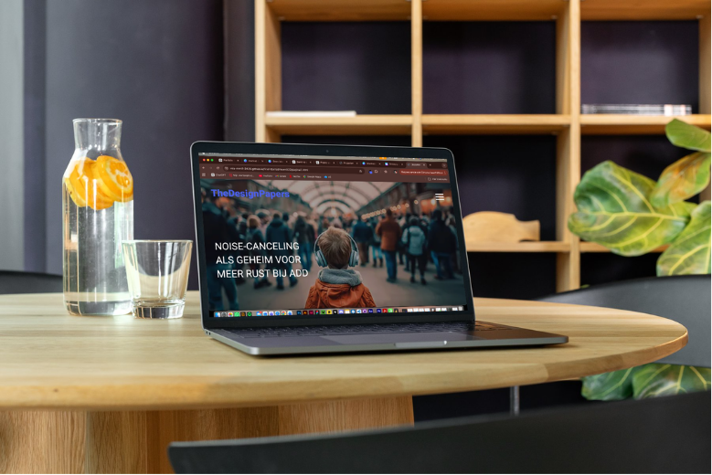
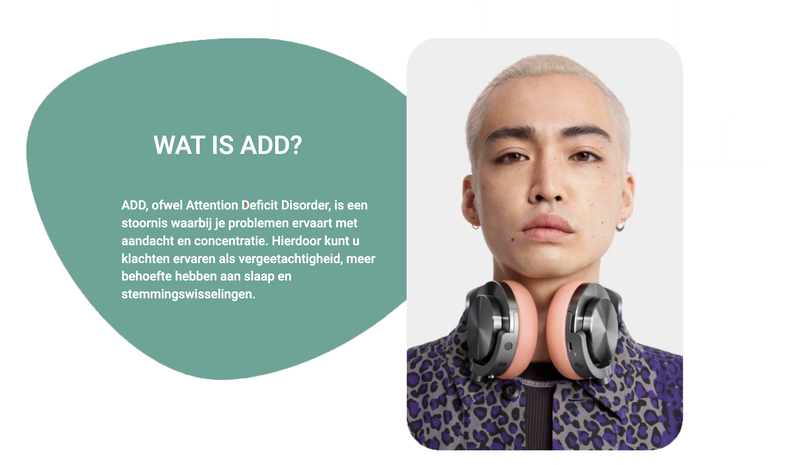

NOISE-CANCELING ALS GEHEIM VOOR MEER RUST BIJ ADD
Zoektocht
Dit project begon vanuit een persoonlijke fascinatie. Als iemand met ADD ervaar ik dagelijks hoe omgevingsprikkels invloed hebben op mijn concentratie en gemoedstoestand. Hierdoor ontstond de vraag: kan technologie, en specifiek noise-canceling, bijdragen aan meer rust en focus?
In plaats van een willekeurig onderwerp te kiezen, heb ik bewust gekozen voor iets dat dicht bij mij ligt. Dit zorgde niet alleen voor intrinsieke motivatie, maar ook voor een kritische en betrokken houding tijdens het proces. De zoektocht draaide daarom niet alleen om het vinden van informatie, maar ook om het begrijpen van mijn eigen ervaringen en deze te vertalen naar een breder perspectief.

Onderzoek
In de onderzoeksfase heb ik me verdiept in zowel de technische als psychologische kant van noise-canceling. Ik heb verschillende bronnen geraadpleegd om inzicht te krijgen in hoe de technologie werkt en welke effecten het heeft op mensen met ADD. Belangrijk hierbij was het vinden van een balans tussen theorie en praktijk. Daarom heb ik ervoor gekozen om een expert te interviewen. Dit gesprek gaf verdieping aan het onderzoek en bracht nuance aan in mijn bevindingen. Zo werd duidelijk dat noise-canceling niet alleen voordelen heeft, maar ook bewust en selectief gebruikt moet worden om gewenning te voorkomen. Door deze combinatie van deskresearch en een interview ontstond een completer en betrouwbaarder beeld van het onderwerp.

Schrijfproces
Na het verzamelen van alle informatie begon het schrijfproces. De uitdaging lag hier in het vertalen van complexe informatie naar een toegankelijk en aantrekkelijk verhaal voor een brede doelgroep. Ik heb bewust gekozen voor een verhalende opening, zodat de lezer zich direct kan inleven in de situatie.
Vanuit daar bouwt het artikel op naar meer inhoudelijke en informatieve stukken, ondersteund door inzichten uit het onderzoek en het interview. Tijdens het schrijven heb ik continu gezocht naar een balans tussen informatief en begrijpelijk. Het doel was niet alleen om kennis over te brengen, maar ook om herkenning en bewustwording te creëren bij de lezer.